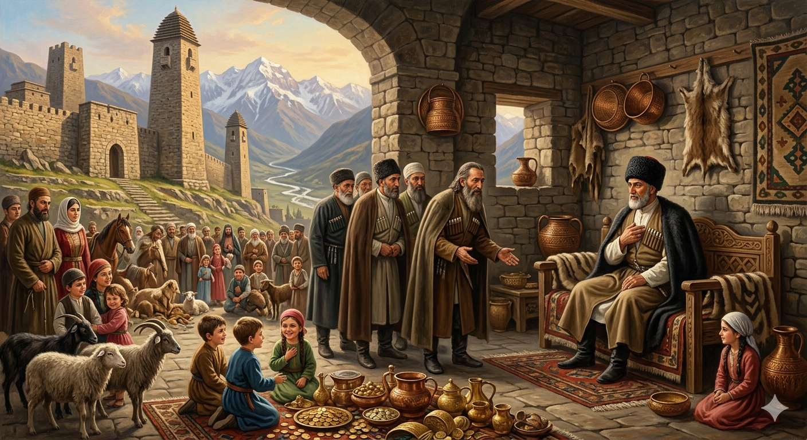

И.А. Дахкильгов. Хьехаме дувцарш - поучительные рассказы-притчи.
И.А. Дахкильгов. Хьехаме дувцарш - поучительные рассказы-притчи. Из ингушского фольклора.

Сулейма-пайхамара аьннад
Хаьттад, йоах, Сулема-пайхамарага: - Даллана чӀоагӀа везавенна саг ва хьо, доккхача рузкъан да ва хьо, доккха фу-тайпа да хьа. Ер эршаргдар сона, аьнна, кхы цхьаккха хӀама дий хьона дагадала? Пайхамаро жоп деннад: - Сай мелла воӀ ва, мелла йоӀ я хац сона, сов дукха уж болаш, хӀаьта а "кӀаьнк ваьв хьона" е "йиӀиг яьй хьона" сайга аьлча, чӀоагӀа хоза хет сона. Чот яь варгвоацаш дошои, дотои, жӀовхараши да сога, бӀарчча мохк бӀаь шера кхаббал, хӀаьта а цхьа сом дахьаш сайна саг тӀавеча, сина боккха тоам хул сона. Халах, сагал сутарагӀа укх дуне тӀа кхы цхьаккха хӀама дац хьона.
РУССКИЙ
Сказал пророк Сулейман
Спросили у пророка Сулеймана: - Тебя очень полюбил наш бог: он дал тебе огромное богатство и многочисленное потомство. Есть ли еще что-нибудь на свете, чего бы ты пожелал? Пророк ответил: - Я не знаю, сколько у меня сыновей и дочерей, настолько их много. И все же, когда мне сообщают, что у меня родились мальчик или девочка, я бываю безмерно рад. Не счесть мое золото, серебро и другие драгоценности. У меня столько богатств, что я могу в течение ста лет кормить всю нашу страну, и все же, когда мне кто-то добавит к ним хотя бы рубль, я получаю большое душевное удовлетворение. Знайте же, что нет на свете более жадного существа, чем человек.
ENGLISH
The Prophet Solomon said
The Prophet Solomon was asked: 'Our God loves you dearly: he has bestowed upon you immense wealth and numerous offspring. Is there anything else in the world that you might wish for?' The Prophet replied: 'I do not know how many sons and daughters I have, so many are there. And yet, whenever I am told that a boy or a girl has been born to me, I am overjoyed. My gold, silver and other treasures are beyond counting. I have so much wealth that I could feed our entire country for a hundred years, and yet, when someone adds even a single rouble to it, I feel great inner satisfaction. Know, then, that there is no creature in the world more greedy than man.
НОХЧИЙН
ПОГОВОРКИ
Боахамах ахча хулачох лорадолда вай. Упаси нас, чтобы наше хозяйство обратилось в деньги. God forbid our household should ever turn entirely into money. Тхан боахам ахчана хийца ма хила Дала ларъе.Виззалца диар мара дац даар. Лишь вдоволь поевши, можно сказать, что насытился. Only when eaten to the full can it be called a meal. Виза юуш бен, юар юар дац.Воша дика вахалва, тӀехь а ма вахалва. Пусть хорошо живет брат, но не богаче тебя (зазнается…). May my brother live well, but not better off than me. Ваша дика вехийла, амма сан т1ехь ма хила.Доацар массаза а ийшад, деррига долаш а хиннадац. Всегда не хватает того, чего нет, а всего никогда и ни у кого не бывало. There's always a shortage of what one lacks; but no one has ever had everything. Доцург массо хана ца тоьа, дерриге долуш а хилла дац.Доацар паччахьа а ийшад. И царь нуждался в том, чего у него нет. Even a king lacked what he did not have. Доцург паччахьана а ца тоьара.Доацаш хиларах долаш хилар дикагӀа да. Лучше иметь, чем не иметь. It's better to have than to lack. Доцуш хиларал долуш хилар тоьар ду.Дошох саг визавац, сискалах визав. Золото не насыщает человека, а чурек насыщает. Gold does not fill a person's stomach; bread does. Дашо стаг ца виза, сискал вижа.Дукха дезаро кӀезига дезийтад. Желание иметь чрезмерно многое научило довольствоваться малым. Wanting too much taught him to be content with little. Дукха дезаро к1езиг реза хила Ӏамийна.Мел дукха дар, аьнна, бӀарг бизац; мел хоза дар аьнна, дог Ӏабац. Как ни много было б добра – глаз не насытится; как ни много было бы красивого – сердце не насытится. No matter how much wealth there was, the eye was never satisfied; no matter how much beauty there was, the heart was never satisfied. Мел дукха хилла а, б1аьрг ца виза; мел хаза хилла а, дог ца1абелла.Тух дукха техача а мегац, кӀезига техача а мегац. Много соли – плохо, мало соли – тоже плохо. Too much salt is bad, too little salt is bad too. Тух дукха а вон ду, к1езиг а вон ду.ХӀама юаш валаре, шура юаргьяр аз; йист хулаш валаре, бер хьоастаргдар аз. Лучшее из того, что бы я поел, - молоко; лучшее, что я мог бы сказать – это слова ласки ребенку. If I were to eat, I would eat milk; if I were to speak, I would speak words of tenderness to a child. Х1ума юучух, шура юур дара ас; дийцарх, берана хьаьстина дийцар дара ас.ВӀаьхийча сагага аьннад: “Хьадаьннад хьона гарзашца маькх юалга!”. Богачу говорили: “Счастливчик, ты даже лапшу с хлебом ешь”. They said to the rich man: "Lucky you, you even eat noodles with bread!" Бахьаьрчу стагана аьлла: «Хьоьга кхочу хьуна мукх дилларца бепиг а юух!»Хаькъал ца хилча, ираз пайданна дац; ираз ца хилча, хьаькъал а пайданна дац. Счастье без ума – не счастье, ум без счастья – не ум. Fortune without wisdom is no fortune; wisdom without fortune is no wisdom. Хьекъал доцуш ирс пайда бац, ирс доцуш хьекъал а пайда бац.Ӏу фийла хилча, жена борал деза хул. У бдительного (хорошего) пастуха овцы тяжело ходят (овцы тучные). With a watchful shepherd, the sheep walk heavy with fat. Ду 1у долчохь жа деза хуьлу.